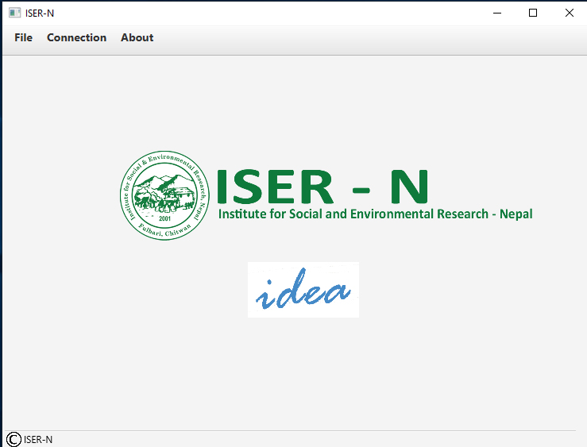
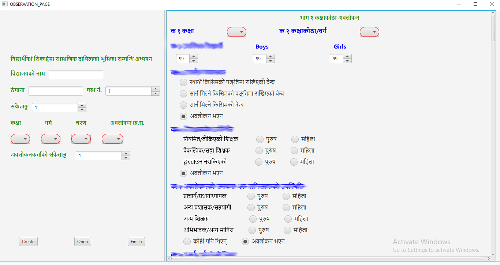

About Project
Iser-N [idea] is a surveying Desktop/Tablet app built for taking observations of different schools. It is compatable for windows application which allows storing data in excel and further can send to server database.
Used Skills
Java, My-SQL, Apache-POI, JavaFX
Clients
ISER Nepal, Bharatpur Chitwan